Participarea la un apel
Pornirea unui apel sau alăturarea la un apel
Browser și clientul Talk Desktop
Când faci parte dintr-o conversație și ai permisiunea necesară, poți porni oricând un apel dând clic pe Pornește apelul în bara de sus. Când un apel este deja în desfășurare, te alături dând clic pe butonul verde Alătură-te apelului din zona de chat sau din bara de sus.

Notă
Dacă nu ai permis încă browserului sau clientului Talk Desktop să folosească microfonul și camera, ți se va cere acest lucru când dai clic pe Pornește apelul sau Alătură-te apelului. Alege microfonul și camera pe care vrei să le folosești și dă clic pe Permite pentru a acorda accesul la dispozitive.
You will see the Check devices dialog, where you can customise your call experience:

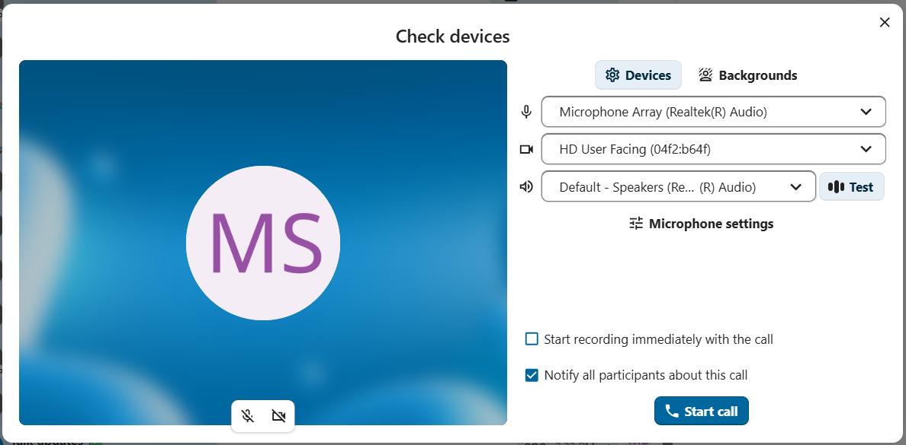
Controlul sunetului și al imaginii video
Folosește pictogramele de microfon și cameră din partea de jos a previzualizării video pentru a opri sau porni microfonul și camera înainte de a te alătura.
Notă
Dacă una sau ambele pictograme sunt gri, fie nu ai un microfon sau o cameră instalată, fie nu ai permis browserului sau clientului Talk Desktop să folosească microfonul sau camera. Verifică dacă ai acordat permisiunea browserului sau clientului Talk Desktop și asigură-te că microfonul și camera nu sunt folosite de altă aplicație.
Setările dispozitivelor îți permit să alegi ce microfon și ce cameră vrei să folosești. Este util dacă ai mai multe microfoane sau camere disponibile:

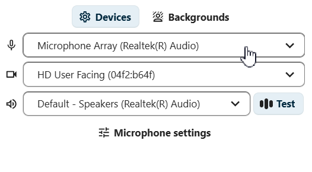
Suprimarea zgomotului
Activează suprimarea zgomotului pentru a reduce zgomotul de fundal în timpul apelurilor, urmând pașii de mai jos:
Open the
Check devicesdialog before or during a callGăsește secțiunea
Setări microfonActivează
Suprimarea zgomotuluila nivelul dorit
În aceeași secțiune sunt disponibile și opțiunile pentru controlul automat al amplificării și pentru anularea ecoului.

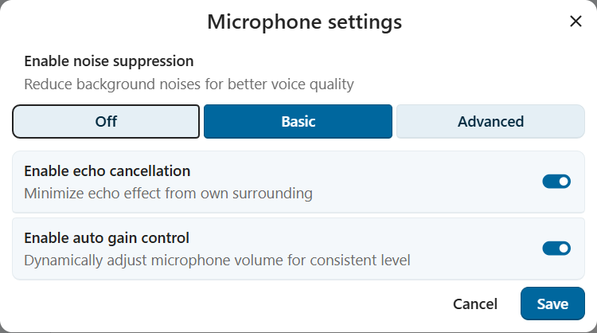
Fundaluri
Fundalurile îți permit să înlocuiești fundalul imaginii video cu una dintre imaginile predefinite. Poți și încărca propria imagine sau alege una existentă în Fișiere Nextcloud. Alternativ, alege opțiunea Estompare pentru a estompa fundalul imaginii video în timp real.

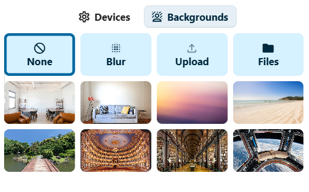
Alăturarea imediată la un apel
If you wish to skip the Check devices dialog in the future, toggle the Skip device preview before joining a call switch in app settings.
For future calls in this conversation, you will join directly, skipping the preview dialog.
Înregistrarea unui apel
Dacă tu ai pornit apelul și vrei să-l înregistrezi, bifează caseta Începe înregistrarea imediat odată cu apelul. Este posibil ca opțiunea de înregistrare să nu-ți fie disponibilă, în funcție de faptul că administratorii de sistem au activat-o sau nu și că ai sau nu permisiunea Moderator în conversație. Dacă te alături unui apel care este înregistrat, s-ar putea să ți se ceară consimțământul înainte de a intra. Pentru mai multe informații, vezi Înregistrarea apelurilor.
Pornirea apelului
Click the Start call button at the bottom of the Check devices dialog to notify all conversation participants of the call.
If you do not want to notify the other participants, start a silent call by opening the three-dot menu to the left of the Start call button
and choosing Start call silently.

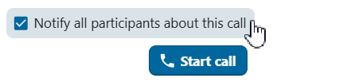

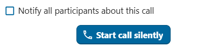
Notă
Ceilalți participanți își pot modifica notificările pentru fiecare conversație, inclusiv dacă vor să primească notificări pentru apeluri.
Starea ta de utilizator va fi setată la Într-un apel, iar pictograma stării va afișa emoji-ul cu balon de dialog.
Clienții mobili
Când faci parte dintr-o conversație și ai permisiunea necesară, poți porni oricând un apel atingând pictograma Telefon sau Video din bara de sus. Pictograma Telefon pornește un apel doar audio; pictograma Video pornește un apel video.
Un apel vocal folosește microfonul și difuzorul de ureche al dispozitivului, ca un apel telefonic obișnuit. Un apel video folosește difuzorul în modul mâini libere și activează implicit camera frontală; o poți dezactiva oricând.
Dacă altcineva pornește un apel, este posibil să primești o notificare, iar dispozitivul poate suna sau vibra, în funcție de setările de notificare. Atinge Telefon sau Video pentru a te alătura sau butonul roșu pentru a refuza. Refuzul închide notificarea apelului pe acel dispozitiv.
Poți controla microfonul și camera (într-un apel video) cu opțiunile din partea de jos a ecranului.
Starea ta de utilizator va fi setată la Într-un apel, iar pictograma stării va afișa un balon de dialog.
În timpul unui apel
După ce te alături unui apel, vei vedea vizualizarea apelului. Aceasta afișează fluxurile video ale tuturor participanților prezenți în apel, cu informații și comenzi suplimentare.

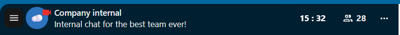
Elementul din extrema stângă afișează durata scursă a apelului.
Lângă el vezi numărul participanților care s-au alăturat apelului curent. Un clic pe număr deschide bara laterală dreaptă cu lista participanților. Participanții prezenți în apel sunt afișați primii.
Vei vedea și timpul de vorbire al fiecărui participant care a vorbit în timpul apelului:

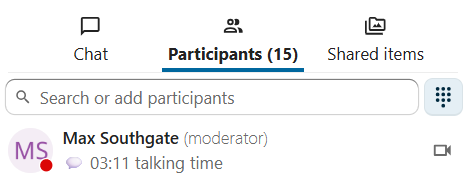
Poți accesa opțiuni și setări suplimentare pentru apel din meniul cu trei puncte din bara de sus.

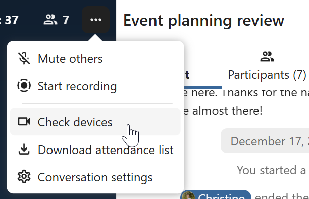
Configurarea sălilor de grup
Sălile de grup îți permit să împarți un apel în grupuri mai mici, pentru discuții mai concentrate. În funcție de permisiunile tale și de configurarea instanței, este posibil ca această opțiune să nu-ți fie disponibilă. Pentru mai multe informații, vezi Săli de grup.
Descărcarea listei participanților la apel
Poți descărca lista participanților la un apel din meniul cu trei puncte din bara de sus. Se descarcă un fișier CSV cu numele și adresele de e-mail ale tuturor participanților.

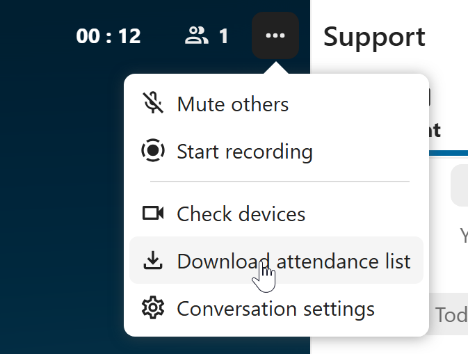
Fișierul CSV conține următoarele coloane:
Name: numele participantului.
Email: adresa de e-mail a participantului.
Type: indică dacă participantul este utilizator înregistrat sau invitat.
Identifier: identificatorul unic al participantului.
Controlul sunetului și al imaginii video
Bara de jos a vizualizării apelului oferă comenzi media, setări de aranjare și alte funcții pe care le poți folosi în timpul unui apel.

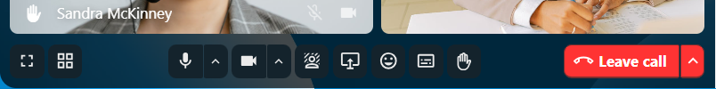
Folosește pictogramele de microfon și cameră pentru a opri sau porni microfonul și camera. Poți folosi și comenzile rapide M pentru microfon și V pentru cameră. Folosește Spațiu pentru apasă-și-vorbește: dacă microfonul este oprit, cât timp ții apăsat pe Spațiu este pornit; dacă este pornit, cât timp ții apăsat pe Spațiu este oprit.
Reacții
Butonul de reacții îți permite să trimiți o reacție emoji tuturor participanților la apel.

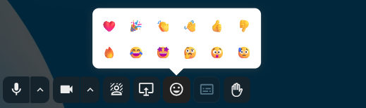
Fiecare participant va vedea emoji-ul urcând din partea de jos a ecranului apelului. Emoji-ul dispare după două secunde.
Ridicarea mâinii
Un clic pe Ridică mâna îi notifică pe moderatori și afișează o pictogramă lângă numele tău. Funcția este disponibilă și cu comanda rapidă R.
Ecran complet
Trece fereastra browserului sau clientul Talk Desktop în modul ecran complet. Este disponibil și cu comanda rapidă F. Apasă Esc pentru a reveni la vizualizarea obișnuită.